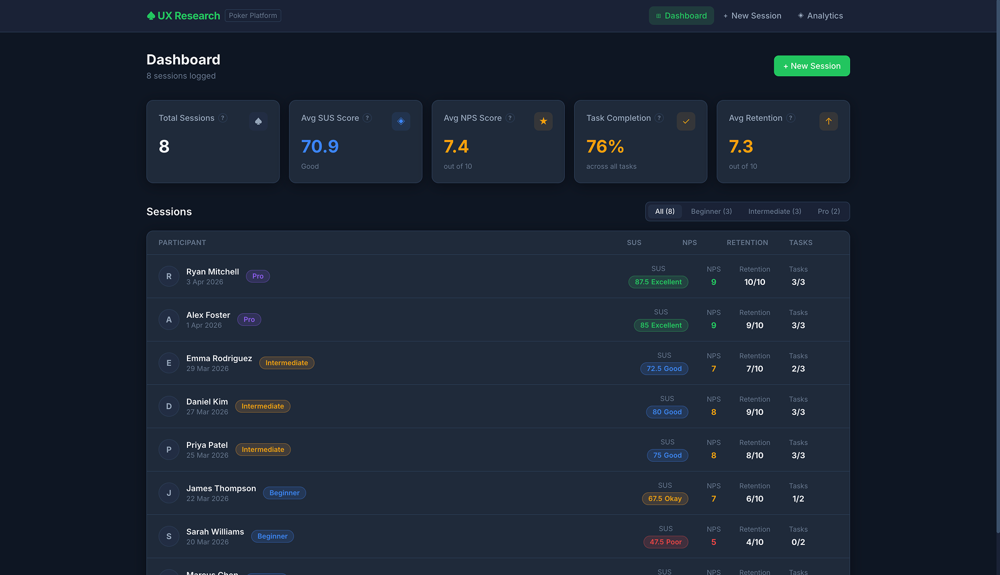
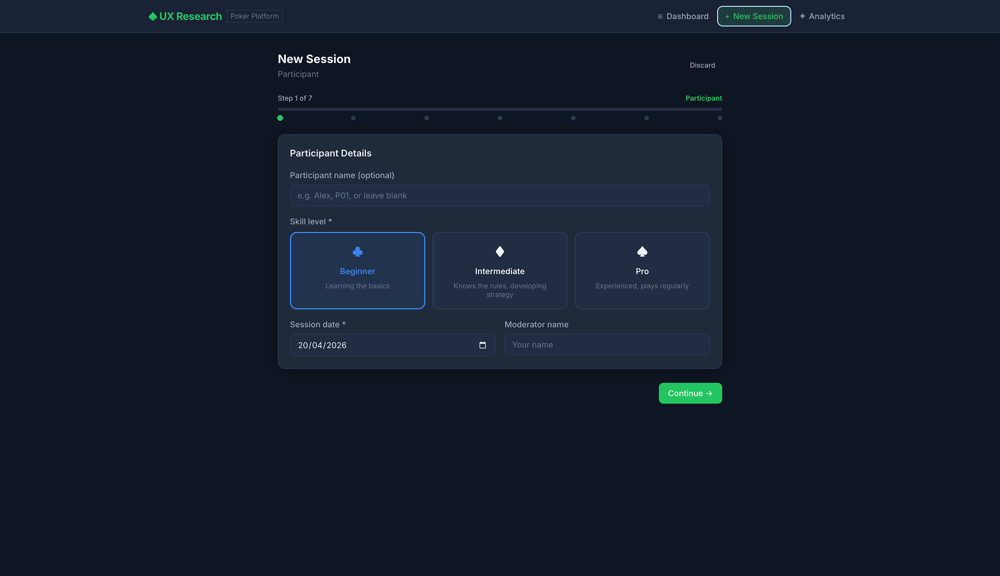
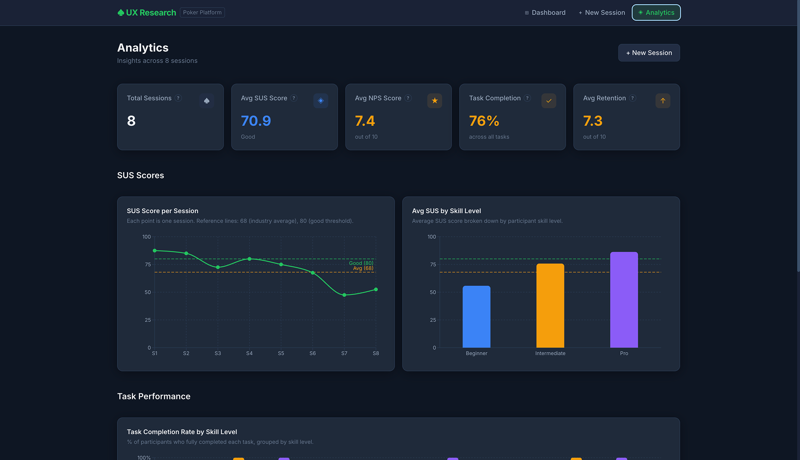
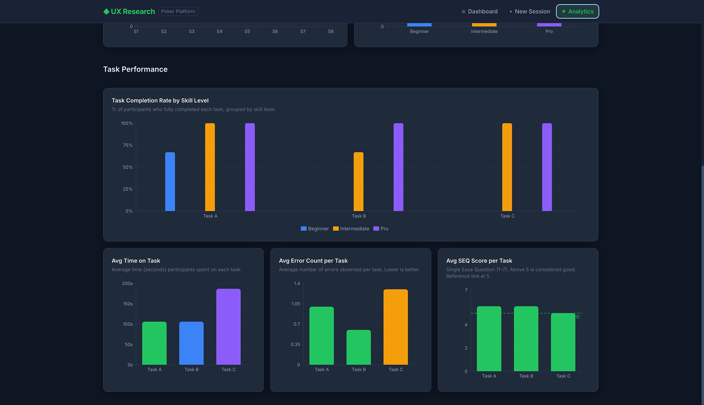
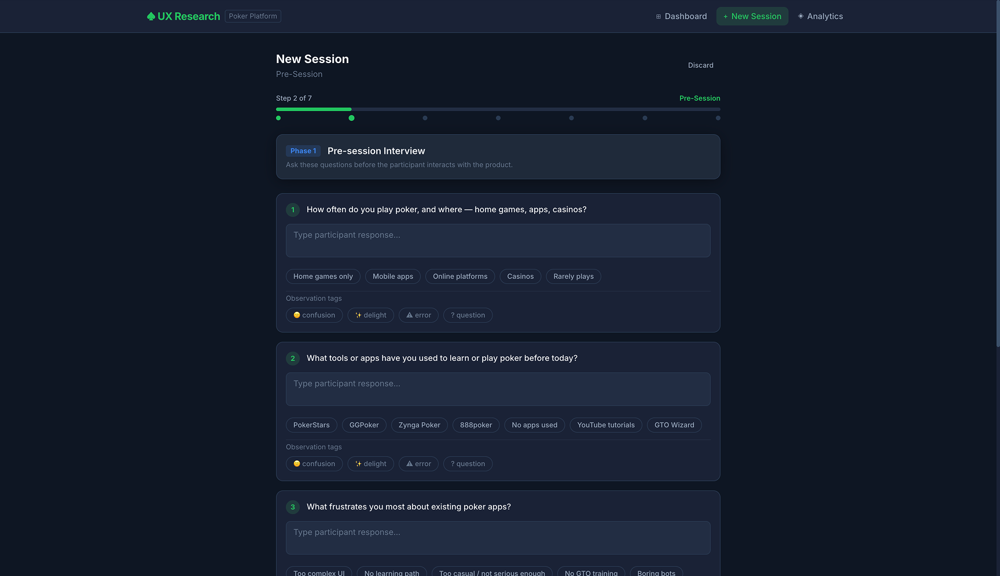

UX research sessions produce raw, messy notes that live in different tools, different formats, and different people's heads. This tool was built to centralise everything — capturing, scoring, and visualising research in one place.
Built specifically for a poker application testing context, the product needed to feel like it belonged in a design team's workflow — not a generic form builder bolted onto a spreadsheet.
"Good research deserves a purpose-built home."
A structured moderator flow that walks through each stage of a live user session — tasks, observations, SUS questions, NPS, and wrap-up — in a single continuous interface.
Automatically calculates System Usability Scale scores from session responses, benchmarks them against industry standards, and surfaces actionable insights.
Live session feeds, NPS trend charts, task performance breakdowns, and observation logs — all updating in real time via Supabase subscriptions.
Multiple moderators can run sessions simultaneously from different devices. All data merges into the same analytics view without conflicts.




Started with a deep dive into existing UX research workflows — Maze, Lookback, and internal spreadsheets were the main tools being used. The gap was clear: nothing combined session logging and live analytics in one dark-themed, design-forward interface.
The 7-step wizard was the hardest design challenge — keeping moderators in flow during a live session meant every step had to be frictionless. Iterated through 4 wizard layouts before landing on a full-screen step-by-step approach with a persistent progress bar.
Delivered a complete Figma file with the poker-themed dark design system, including all chart states (empty, loading, populated). QA'd the Supabase real-time subscriptions against edge cases — session disconnects, concurrent submissions, and data race conditions.